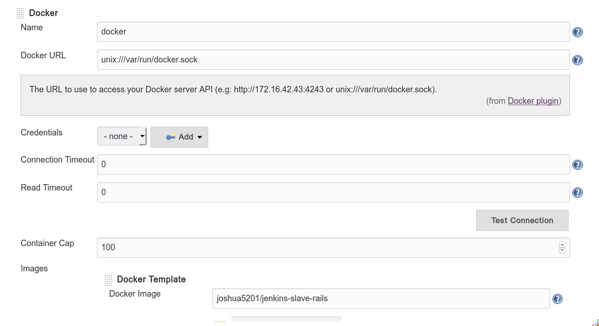
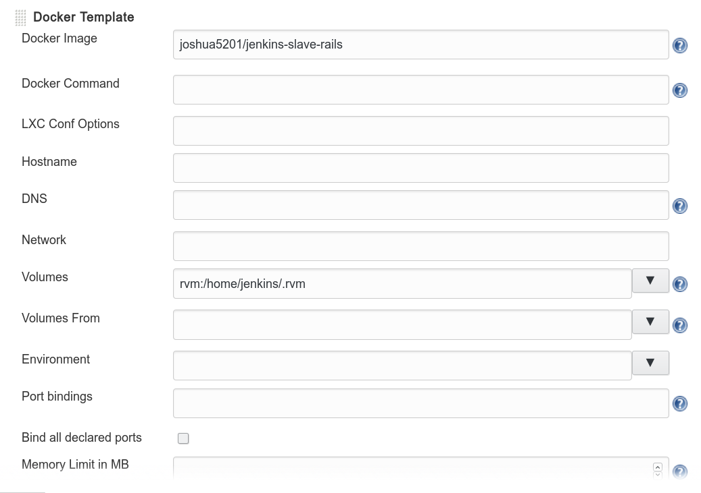
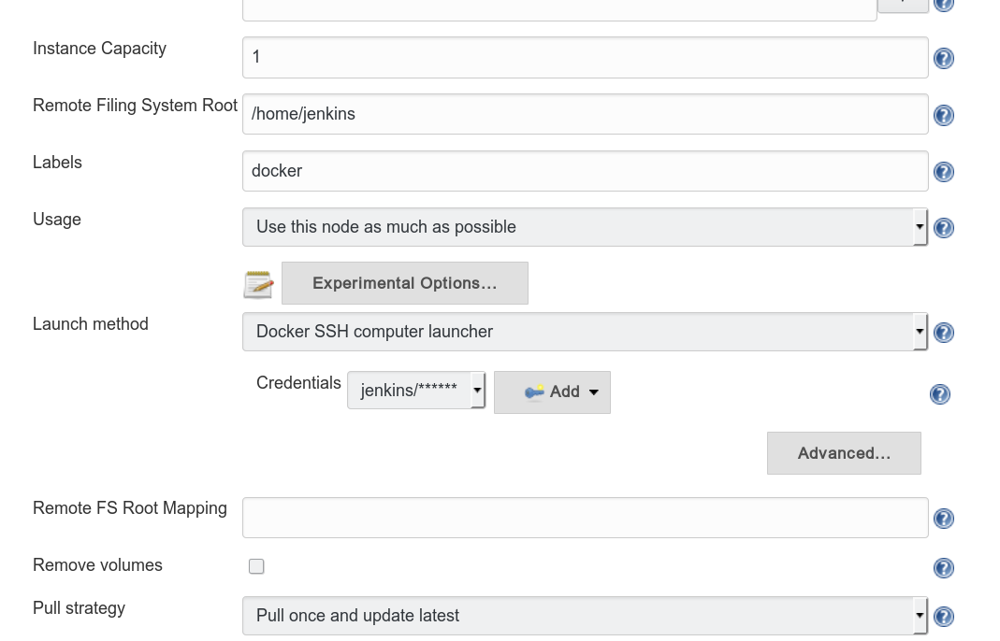
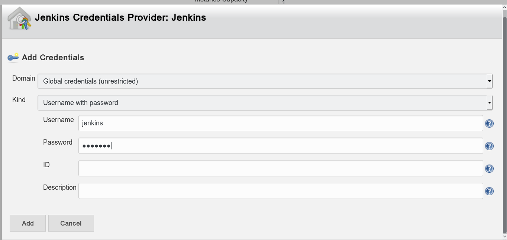
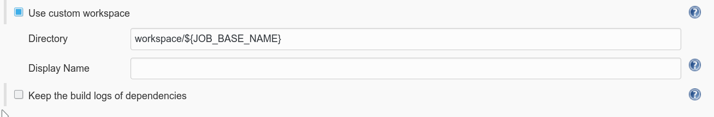
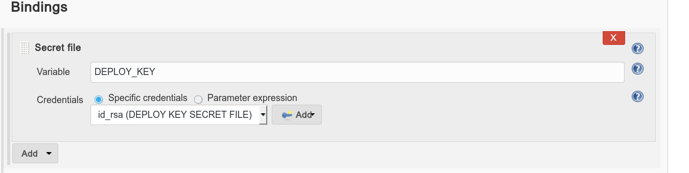
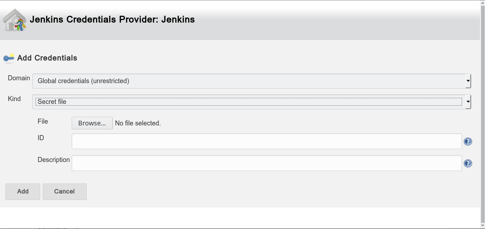

CI Installation
Requirements
- Docker
- Jenkins
Install Docker
Linux
- See Install Docker Engine on Linux.
- if you want to use docker without
sudo:
- Remember to add yourself to the
docker group. sudo groupadd docker && sudo gpasswd -a $USER docker
- Restart the daemon:
- In Ubuntu:
sudo service docker restart
- Other distributions:
sudo systemctl restart docker
Mac OS X
- See Getting Started with Docker for Mac.
Basic Docker Usage
Note: All commands should run with sudo permission unless you have set the docker group.
Terminologies
- Container: VM-like instance running processes.
- Image: Disk image for containers. Defined by a Dockerfile. You can get a lot of images from Docker Hub
- Volume: A host directory that can be mount into container directory.
Container Management
- Show current running containers:
docker ps
- Show all containers:
docker ps -a. This includes exited dockers.
- Show available docker images:
docker images
- Show all volumes:
docker volume ls
- To delete a container / image / volume:
- Use 1. to 4. to get ID / NAME (something like
9e24d7d5a3be or jenkins_workspace).
- Container:
docker rm [ID]
- Image:
docker rmi [ID]
- Volume:
docker volume rm [NAME]
- Tip: to remove all unused containers:
docker ps -a | awk '{print $1}' | xargs docker rm
Running a Container
bash
$ docker run [Options] [Docker Image] [Command]
$ docker run -v [host path / volumne name]:[container path] -it --rm [docker image] [command]
$ # Example:
$ docker run -v rvm:/home/jenkins/.rvm -v jenkins_workspace:/home/jenkins/workspace -it --rm joshua5201/jenkins-slave-rails /bin/bash
Prepare Docker Images
Install RVM in Image
- Pull image:
docker pull joshua5201/jenkins-slave-rails
- Create volume for RVM:
docker volume create --name rvm
- Create volume for Workspace:
docker volume create --name jenkins_workspace
- Install RVM in docker:
docker run -v rvm:/home/jenkins/.rvm -it joshua5201/jenkins-slave-rails /bin/bash
- Inside docker:
su -l jenkinscurl -sSL https://get.rvm.io | bash -s stable
Available Images
joshua5201/jenkins-slave-rails: basic runtime joshua5201/jenkins-slave-rails-pg: with postgresql installed. postgres user: jenkins, no password.
Jenkins Configuration
- Follow the default steps and create first administrator user
- Manage jenkins -> Manage plugins -> Available -> install docker rvm
- Manage jenkins -> Configure system -> Add a new cloud (choose docker) ref: https://wiki.jenkins-ci.org/display/JENKINS/Docker+Plugin
- set name, docker url (usually
unix:///var/run/docker.sock)

- Add docker template
- Docker image: joshua5201/jenkins-slave-rails
- Container settings -> Volumes: rvm:/home/jenkins/.rvm jenkins_workspace:/home/jenkins/workspace
- Remote Filing System Root: /home/jenkins
- Labels: docker
- Add Credentials -> username with password -> jenkins/jenkins


- When adding other images like jenkins-slave-rails-pg, just change the Docker image and Labels above.
Create Build Job
- New Item -> Enter name -> Choose freestyle item
- General -> Advanced -> Custom Workspace: jenkins_workspace:/home/jenkins/workspace

- Restrict where this project can be run: docker (or whatever labels you set for your docker image)
- Source Code Management: git -> set repo url -> add credentials (ssh private key with username 'git')
- Build Environment: Run the build in a RVM-managed environment -> choose your implementation (e.g.
2.3.0)
- Add build steps: Execute shell
bash
gem install bundler
bundle install
bundle exec rake db:test:prepare
bundle exec rspec
Create Deploy Job
- To avoid SSH problems, please use the same key for GitHub repo deploy key and the key for SSH login to staging / production server.
- Follow the same steps as build job.
- At Build Environment -> Use secret text(s) or file(s) -> Varialble: DEPLOY_KEY -> Upload a secret file (id_rsa PRIVATE key)

- Use the following shell script template:
``` bash
Prepare bundler
gem install bundler
bundle install
Setting up ssh-agent for capistrano
eval ssh-agent
ssh-add $DEPLOY_KEY
Deploy scripts here
bundle exec cap staging deploy
Kill ssh-agent
kill $SSHAGENTPID
```
Manage Credentials
Tips
- You can create new job based on old ones.
- If you want Jenkins to integrate with GitHub:
- Go to https://github.com/settings/tokens to generate your token
- Manage Jenkins -> Configure System
- GitHub -> Add GitHub Server
- Credentials: Secret Text -> Input your token here
- Project configuration tips:
- Build Triggers -> Build when a change is pushed to GitHub
- Post-build Actions: Set status for GitHub commit (need to have token set)
Troubleshooting
- If any packages are needed to be installed, email: joshua841025@gmail.com or fork my Dockerfile.
- If it occurs an error like
ActiveRecord::StatementInvalid: PG::InvalidParameterValue: ERROR: new encoding (UTF8) is incompatible with the encoding of the template database (SQL_ASCII), add template: template0 to the test section of your database.yml.